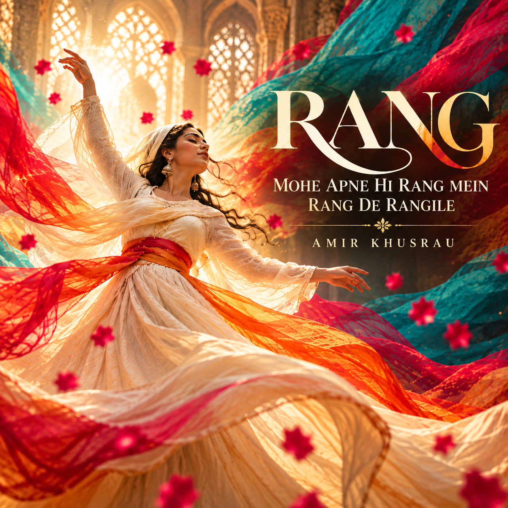

▶FEATURED RELEASE · SUFI / CONTEMPORARY
Rang
Mohe Apne Hi Rang Mein
Rang De Rangile
Poet: Amir Khusrau
A timeless Sufi poem, reimagined with modern sound. A celebration of love, colour and divine union.
❧
Love, surrender
and becoming.